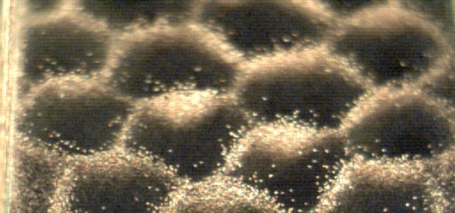
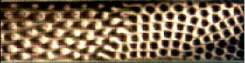
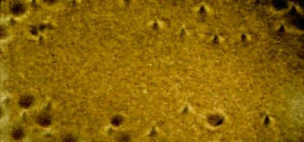

{kind=link}
 The
parameters for this
movie sequence are:
The
parameters for this
movie sequence are: The experimental setup is shown here.

The parameters for this movie sequence are:F=30 Hz, f = 15 Hz, G = 3.65 , g = 10%G, F = 0
What the above says is that the primary drive frequency is 30 times/sec and the acceleration due to this drive signal is 3.65g, also there is an interlaced driving signal at one half of the primary drive with an acceleration of 10% of that signal, also the phase shift between these signals is effectively zero radians.
What you are seeing is a snapshot of a group of hexagon patterns which have organized in a bed of vertically oscillated granular layers. The term 'granular layers' in this instance refers to a 10 particle depth bed of copper spheres whose diameter is on the order of 150 microns +/- 10%. These spheres are being contained in a cell of rectangular geometry with dimensions 4 cm x 12 cm. These particles as mentioned before are being shaken in a vertical manner at 30 times/sec. These very regular and ordered structures are initially not present in the bed until there is a rather large subharmonic signal included in the driving. This image would be of linear stripes if that signal was not applied. By including this perturbation the striped patterns become unstable, and from that instability a new stable structure arises.
The
parameters for this
movie sequence are:
F=40 Hz, f = 0, G = 3.9 , g = 0, F = 0
Like in movie1 these parameters give the rate of oscillation and the effective acceleration scaled to g. There is no interlaced driving signal being imparted by the driving control. What we have discovered is that this subharmonic signal though very interesting in images like movie 1 is intrinsic to the pattern which is shown above. Our understanding is as follows.
The subharmonic signal is related to the 'anti-phase' nature of the pattern shown above. This pattern "interface" is a topological structure which separates two regions of granular material which are undergoing period doubled motion. This type of motion can be understood as an inelastic ball bouncing on a vibrating plate. When the plate acceleration reaches a value of 3.72g the ball lifts to an alternating height on each cycle. This action of alternating height allows for two phases to coexist in the material. Because the container is of finite mass ( which means it can be effected by the momentum of something striking it ) it can 'pick up' a subharmonic signal from the sand hitting its surface. But, because that signal is resulting from two or more ( depending on the number of interfaces formed ) regions of sand which obey a conservation of mass, the imparted forces are canceled out. This understanding has lead to the question of being able to dynamically control the motion of this excitation be adding a subharmonic signal. Which has recently been accomplished.

The parameters for this movie sequence are:F=40 Hz, f = 0, G = 3.6 -3.9 , g = 0, F = 0
These images are actually the testing ground for our new camera, but nonetheless are very amazing to behold. What we do for this set of images is, fix the image aquistion rate. to exactly 1/2 of the driving frequency so the outcome is a synced set of images. Then the driving amplitude is increased. After a steady interface is formed a subharmonic signal is added and the interface moves in the cell.

The parameters for this movie sequence are:F=40 Hz, f = 0, G = 2.8, g = 0, F = 0
Here is the regime of localized oscillons which are observed at much smaller
plate accelerations than hexagonal patterns or interfaces. Frame rate of the
clip is 500 fps. You can see both peaks and craters which correspond to
opposite phases of the oscillon's life cycle. This illustrates subharmonic
nature of these granular structures.
These images were captured using a Kodak Motion Corder system. The speed of image capture was 500 frames/sec (fps) {movie1, movie2, movie4} and 20 fps {movie3}. Images were then transferred to a Silicon Graphics Origin supercomputer where they were manipulated into a movie which you can enjoy.